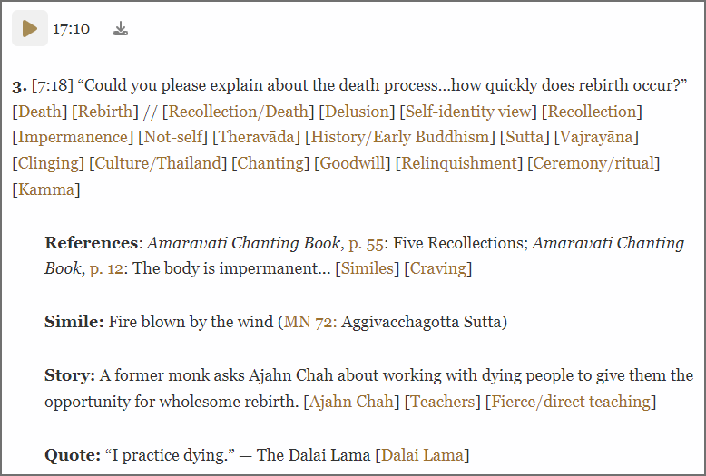

Overview
The Ajahn Pasanno Question and Story Archive is an attempt to make the recorded oral teachings of Ajahn Pasanno and those who teach alongside him more accessible. There are already many books and booklets of Ajahn Pasanno’s transcribed teachings, but these cover only a fraction of the available audio recordings. In particular, there are hours of recorded question and answer sessions and topical discussions which are very relevant to people with similar concerns and of less interest to everyone else. Transcribing all of these would be a major undertaking.
In addition, transcription inevitably flattens the nuance and emotional warmth of Ajahn Pasanno’s teachings. Anyone who has participated in Dhamma discussion with him knows the empathetic chuckle that frequently accompanies his responses, which is often as much a teaching as the answer itself.
This archive tags and partially transcribes questions and discussions such that visitors can find what they are looking for while the bulk of the content remains in audio form. As of November 2023, I have been the only contributor to the transcribed content of the archive, but many others have helped with web design, organizing the tags, and writing documentation. Creating the archive has significantly enhanced my understanding and appreciation of Ajahn Pasanno’s teachings.
Structure
Events and Sessions
The archive indexes audio recordings from several dozen events at which Ajahn Pasanno taught. The date, venue, teachers, website, and event format are recorded for each event. Each event contains one or more sessions which correspond in most cases to individual existing audio recordings from the event available on abhayagiri.org. Sessions may represent multiple recordings made on the same day or be spread over multiple days. The archive format is most effective for question and answer sessions and teacher-led discussions, so I often omit recordings of Dhamma talks and other extended teachings from events included in the archive. These can be found by following the link to the event website.
Excerpts
Each session contains one or more excerpts, which are references to specific audio clips within the session. The excerpt is the most basic unit in the archive database. Each excerpt is categorized by kind (e.g. question, comment, reading, guided meditation, etc.), which the website often displays in bold text. Each excerpt contains a text description called the body text. The precise meaning of the body text and how it is displayed depend on the kind of excerpt. For example, the body text of questions is the question itself, which is usually displayed in quotation marks, while the body text of readings is the title, author, and pages of what was read. Excerpts also specify one or more teachers, the meaning of which again depends on the kind of excerpt. For questions, it’s the teacher who answered the question; for readings, it’s the author of the book (The reader of the book can be specified by an annotation to the excerpt as described later on). Excerpts further specify a start and end time within the session they are a part of. The website generation software uses this information to split the session audio into multiple files corresponding to each excerpt.
Tags
Each excerpt is labeled by a set of tags that describe its content. To aid in searching, tags which are mentioned in the question itself are designated q-tags, and those which apply only to the answer are designated a-tags. The symbol ‘//’ separates q-tags from a-tags in the website display. For excerpts which are not questions, q-tags correspond to the topic of the excerpt and a-tags to its explication. The tags are organized in a hierarchical structure, which is described in detail here.
Annotations
Excerpts may further be described by a series of annotations, which the website displays as indented paragraphs below the main body of an excerpt. Like excerpts, each annotation has a kind. For example, in answering the question below, Ajahn Pasanno refers to the Amaravati Chanting book, a simile in a sutta, a story about Ajahn Chah and a quote by the Dalai Lama. Depending on their kind, annotations may have teachers and tags associated with them, but have no audio clip independent of the excerpt they belong to. All tags applied to excerpts are considered a-tags for search purposes.
Example Excerpt

The figure above shows the website display of excerpt 3 in session 1 of the 2008 Metta Retreat. The audio begins at 7:18 in the session and runs for 17 minutes, 10 seconds. [Death] and [Rebirth] are the two q-tags; all other tags are a-tags. The excerpt itself is a question, and it contains four annotations of varying kinds.
Searching the Archive
The website menus link to a series of static pages which allow the user to browse the tags, events, and teachers contained in the archive in a variety of ways. Links to particular tags, events, and teachers go to static pages which list each relevant excerpt. Event pages simply list each excerpt in each of the event sessions. The tag and teacher pages also group excerpts by event and session, but additionally allow the user to narrow the search by excerpt kind. (Pages containing fewer than 10 excerpts don’t have this feature.) Selecting the “All excerpts” menu item allows one to see all excerpts of a particular kind in the archive.
The website does not yet enable the user to easily search the body text of excerpts. Two workarounds for this significant limitation exist:
-
Use the browser’s built-in search feature (usually Ctrl+F or Cmd+F). Because too many audio players on one page bog down the web browser, pages listing more than 100 excerpts are split into subpages which must be searched separately. Alternatively one can select “All/searchable” to search all excerpts and then follow the “playable” links to listen to the excerpt.
-
Use Google or other external engines to search the archive by asking them to restrict searches to the events directory. I haven’t yet tested this.
Scope
The project currently focuses on Q&A sessions and discussions led by Ajahn Pasanno. Events including particularly valuable stories are annotated in greater detail. If there is energy and interest, we might expand the scope to include events led by other Abhayagiri teachers and teachers visiting Abhayagiri. In this case, it would become the Abhayagiri Question and Story Archive. However this is as far as the project will go. The audio sources will remain only abhayagiri.org, Abhayagiri’s YouTube channel, and Abhayagiri's audio archive (with consultation and permission). Perhaps others might create a website to index Q&A sessions from other teachers (see License). An index of Ajahn Sona YouTube Q&A sessions already exists.
Teacher consent
Not all monks and nuns want their teachings widely distributed. Most monastics in this tradition went forth due to their experience of suffering and faith in the Dhamma rather than a desire or ability to teach. Monastics are generally introverts. A properly-implemented economy of gifts ensures that material support for monastics is independent of teaching activity, and the concern is more that people receive skillful answers to their questions than that they listen to our answers. At the same time, a diversity of voices answering a question can help the listener understand multiple perspectives.
For these reasons, we ask teachers individually about their detailed preferences before including their material in the archive. If teachers prefer, they can review each excerpt individually before deciding whether it should be included in the archive. It’s too much to ask volunteers to keep track of whether or not they should transcribe a question based on all these factors, so the database keeps track of which teachers have given their consent for what. The website generation engine excludes questions accordingly before they become available online.